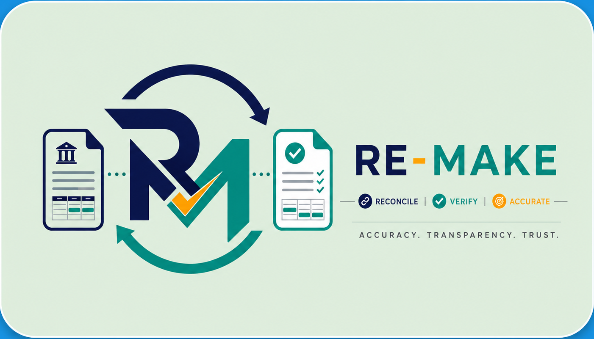

Effective Date: November 2026
Welcome to Remake ("we," "our," or "us"). We respect your privacy and are committed to protecting it. This Privacy Policy explains how we handle your data when you use our web application to manage your SPARK and BiMS bills.
Our application requires access to your Google Account (specifically Google Drive and Google Sheets APIs) to function properly. We use this access strictly for the following purposes:
We do NOT read, access, modify, or delete any other files or spreadsheets in your Google Drive.
All your data is stored directly in your personal Google account. We do not have any external databases, we do not store your data on our servers, and we do not collect any personal information in the background.
We do not share, sell, or transfer your data to any third parties.
Remake is a client-side application that processes data directly in your browser. We do not store, retain, or share any of your Google Sheets data, personal information, or billing records on our servers. All data is saved directly to your personal Google Drive. Because we do not store your data, you retain full control over it. You can delete your data at any time by simply deleting the generated spreadsheet from your Google account and removing the app's access from your Google Security settings.
We implement strict security measures to protect your sensitive data:
If you have any questions or concerns regarding this Privacy Policy, please contact the developer at:
📧 tksumesh85@gmail.com